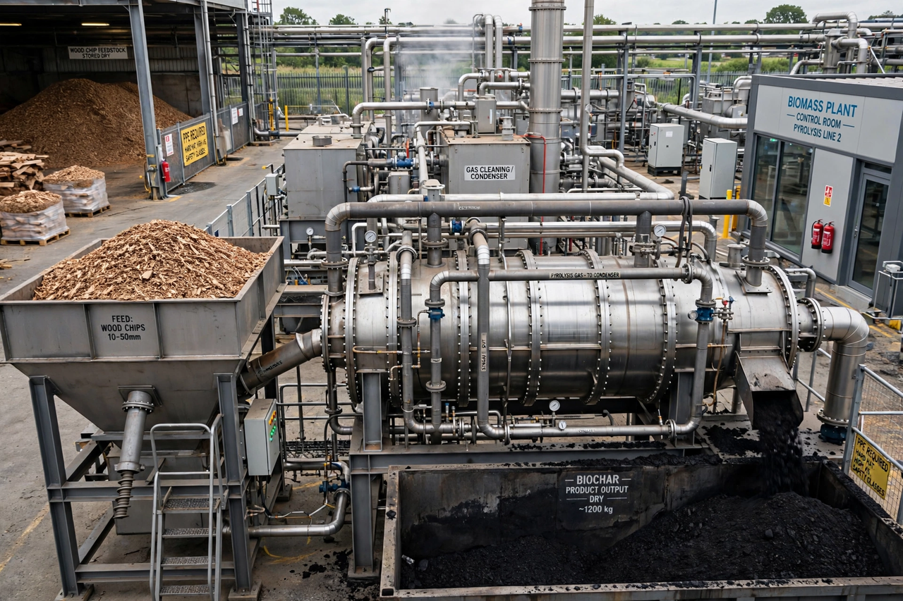

| Pyrolysis | |
|---|---|
 | |
| Type | Thermochemical decomposition |
| Conditions | Elevated temperature (typically 300–900 °C) in the absence of oxygen |
| Products | Solid char, liquid oil/tar, combustible gas |
Pyrolysis is the thermal decomposition of materials at elevated temperatures in an inert atmosphere — that is, in the absence or near-absence of oxygen, so that the material does not burn but instead breaks down chemically into smaller molecules. The word derives from the Greek pyr (fire) and lysis (separating). Pyrolysis of organic matter generally yields three product streams: a solid residue rich in carbon (char or coke), a condensable liquid (pyrolysis oil, tar or bio-oil), and non-condensable gases such as hydrogen, methane, carbon monoxide and carbon dioxide.
Depending on heating rate and residence time, pyrolysis is classified as slow, fast or flash pyrolysis. Slow pyrolysis — heating biomass at low rates over hours — has been used since ancient times to make charcoal, and maximises the solid fraction. Fast pyrolysis heats finely ground feedstock at hundreds of degrees per second with vapour residence times of a few seconds, maximising liquid bio-oil yields (up to about 75% by weight). Flash pyrolysis operates at still higher heating rates. Related processes include carbonisation, torrefaction (mild pyrolysis at 200–300 °C), gasification (which admits a limited amount of oxidant at higher temperatures to maximise gas production) and hydrous pyrolysis, carried out in water at high pressure.
Pyrolysis underpins several long-established and emerging industries:
In biomass pyrolysis, the three main polymers decompose over characteristic temperature ranges: hemicellulose around 220–315 °C, cellulose around 315–400 °C, and the more refractory lignin over a broad range up to 900 °C. Primary vapours can undergo secondary cracking and repolymerisation reactions that alter the balance of gas, liquid and char. The process is generally endothermic and requires an external heat supply, often provided by combusting part of the gas or char produced.